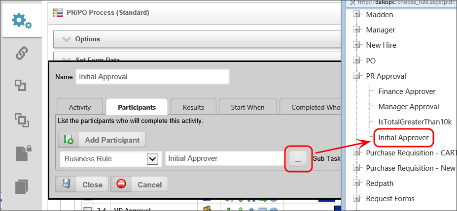
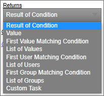
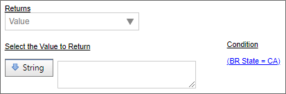
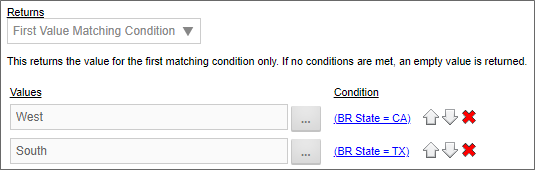
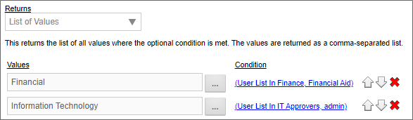
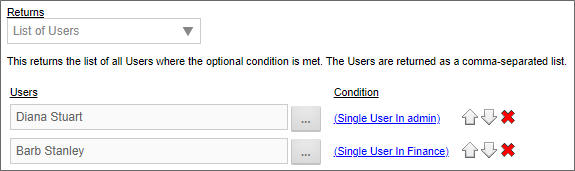
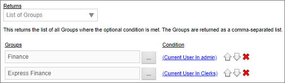
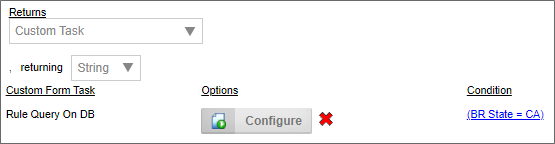

The Business Rule name and description identify and describe the object. A custom icon can also be configured for this Business Rule. To change the icon used for this Business Rule, click on the  icon.
icon.
Process Director incorporates a Business Rules engine that empowers users to rapidly implement complex business processes. Business Rules are reusable objects that can be embedded within your Process and/or Form to conditionally control how they should run and behave in various conditions. Business Rules can be defined as simple conditions, or as sophisticated, interrelated rule sets.
Business Rules can be used to return the result of a single condition or a complex condition set which enables you to incorporate sophisticated business logic into the operation of Form or process definitions. Business Rules can also return a list of users, groups, string values, a single value, or run a custom task, based on conditions that you configure.
A common use of Business Rules is to evaluate data from a Form field, then return a value based on the Form field value. When used in this way, Business Rules will use the current form data to make dynamic form decisions based on the current value of the field, rather than the value stored in the database for the Form Instance.
Click here to open the simulator in a new window, and practice creating a Business Rule.
The following properties are available for configuring Business Rules.
The Business Rule name and description identify and describe the object. A custom icon can also be configured for this Business Rule. To change the icon used for this Business Rule, click on the icon.
Specify a group to organize Business Rule names. When selecting a Business Rule, they will be then be categorized under the groups named in this field. This becomes useful when there are many Business Rules to choose from. Business Rules will be displayed alphabetically in all pickers, showing the Groups first, then all those Business Rules without Group names.

For example, the Group in the Value Picker for the Dept Head Approval activity is named “Expense” is displayed under the selection category “Expense” whenever a Business Rule option is presented.

You can optionally link a Business Rule to a specific Form definition in the Content List. When this is configured you can choose a form field from this Form from a dropdown list instead of selecting the Form in every condition. Essentially, this makes the selected Form the default Form for the condition selections. This is convenient if you have only one Form that needs to be associated with the Business Rule.
You can optionally link a Business Rule to a specific Workflow definition in the Content List. When this is configured you can choose a step name from a dropdown list instead of typing in the step name when configuring the return result of a Business Rule.
You can optionally link a Business Rule to a specific Process Timeline Definition in the Content List. When this is configured you can choose an activity from a dropdown list instead of typing in the activity when configuring the return result of a Business Rule.
When a business Rule is evaluated a result is returned. There are many types of returns that can be used in your Business Rule.

The following is a list of return types and their description.
This return type will return the result of a condition. If selected, you can create a specific condition using the Condition Builder and it will return the result of that condition. For example: If a specific checkbox is checked the result would be true.
This return type will return a value. If selected, you can select from the Select the Value to Return dropdown. This allows you to select a pre-defined value in the system or you can enter your own value. Optionally you can create a condition to only use that value if the condition is met.

This return type will return a single value, based on the evaluation of conditions in the business rule. If selected, you can select from the Select the Value to Return dropdown. This allows you to select a pre-defined value in the system or you can enter your own value. Optionally you can create a condition to only use that value if the condition is met.

This return type will return a list of string values in a comma separated list. If selected, you can add an item to the list by clicking on the Add Value button. This will add a value to the list. Optionally you can conditionally add that value by adding a condition to each value added to the list.

The business value will return a single user, based on the evaluation of conditions in the business rule. If more than one user meets the specified conditions, Process Director will return only the first user that meets the condition. The user can be manually identified in the business rule, or, from a field on a Form.
Prior to v3.75, Process Director required that the user field in the Form be a User Picker control. With v3.75 and higher, users can be identified from a text field that contains the UID for the user.
This return type will return a list of users in a comma separated list. If selected, you can add a user to the list by clicking on the Add Users button. This will add a user to the list. Optionally you can conditionally add that user by adding a condition to each user(s) added to the list.

The business value will return a single user group, based on the evaluation of conditions in the business rule. If more than one user group meets the specified conditions, Process Director will return only the first user group that meets the condition.
This return type will return a list of groups in a comma separated list. If selected, you can add a group to the list by clicking on the Add Groups button. This will add a group to the list. Optionally you can conditionally add that group by adding a condition to each group(s) added to the list.

This return type will return the result of a custom task. If selected, you can add a custom task by selecting one from the pick list and then clicking on the Add Custom Task button. Once you have added the custom task you can configure the custom task by clicking on the Configure button. Optionally you can conditionally return the result by setting a condition.

A Business Rule can accept a parameter that is passed to the business rule from a System Variable. While Business Rules already have access to Form data if the Business Rule is called in the context of a Form, the parameter will accept non-form data that is needed to properly evaluate the conditions. In such a case, the Business Rule can be called via a System variable, using the following syntax to both call the Business Rule and simultaneously pass the Parameter(s):
{RULE:BusinessRuleName,$ParameterName1=ParameterValue1,$ParameterName2=ParameterValue2}
The "$" signifier is required to specify the name of the Parameter(s).
You can add the parameter names to be used in the system variable by creating the Parameter Names in the Parameters section.
 Business Rule Parameters can only be used with System Variables.
Business Rule Parameters can only be used with System Variables.
Your installation of Process Director should come with sample Business Rules and accompanying Forms and processes in the [Samples] folder. If you do not have this folder, you can contact BP Logix technical support.